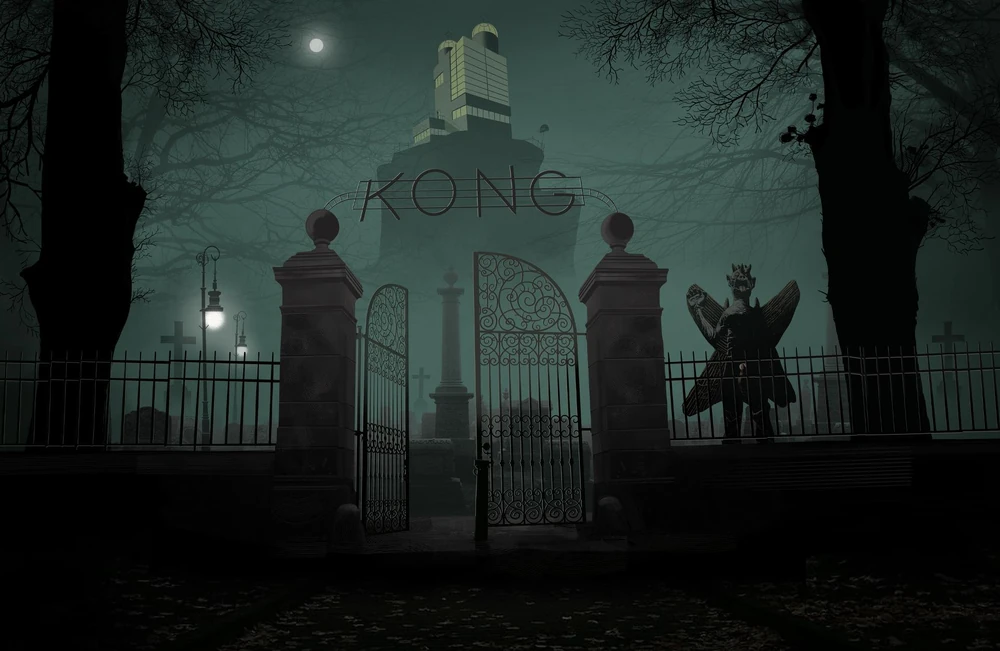

Gorillaz é muito mais do que uma banda virtual. Por trás de sua música existe um universo fictício próprio, repleto de acontecimentos estranhos, encontros sobrenaturais, conflitos e personagens inesperados. Contada por meio de videoclipes, animações, entrevistas e diversas outras mídias, essa história acompanha a vida de seus quatro integrantes — 2-D, Murdoc Niccals, Noodle e Russel Hobbs — enquanto enfrentam a fama, o caos e as situações mais absurdas. Explore as diferentes fases de Gorillaz e descubra as histórias, os personagens e os acontecimentos que deram forma a esse universo em constante expansão.